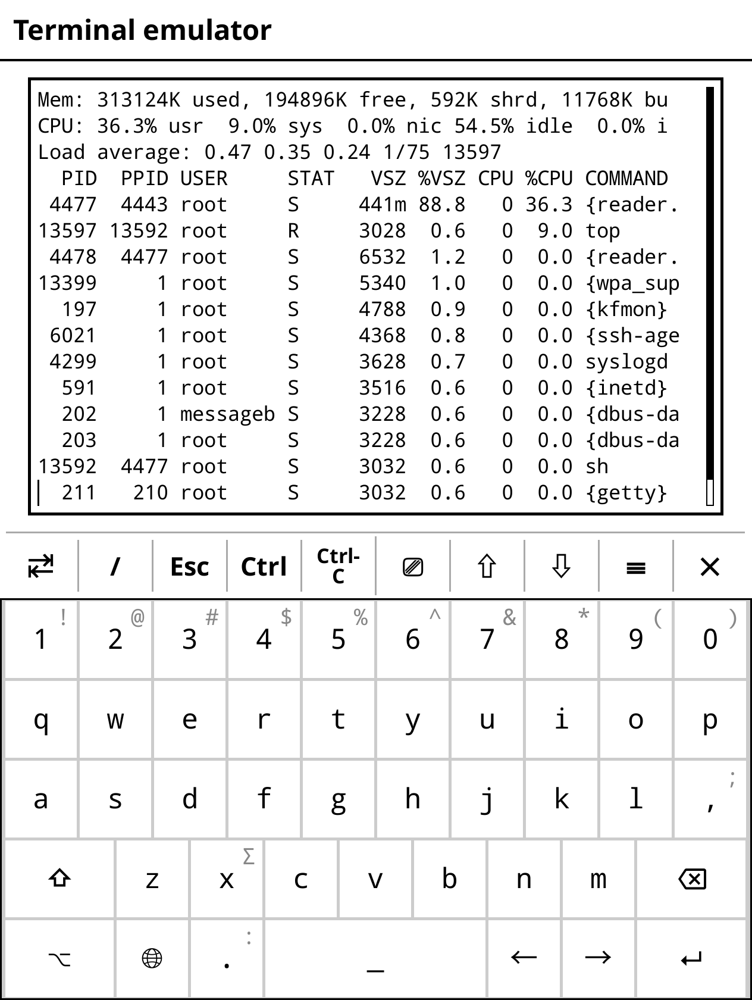

Back up KOReader book metadata with rsync
For each book, KOReader creates a metadata file that contains book settings, notes, current position, etc. And while you can sync the current position and export notes, it also makes sense to keep a backup of all the important data. To make it easier to manage both the content and metadata, use a dedicated directory on your ereader. For example, I have the Library directory on my Kobo device. All books are stored there, grouped in subdirectories by language, as follows:
This way, I can back up everything by syncing the Library directory and its entire contents using rsync. There are two ways to do that.
The simplest approach is to connect the ereader on a machine that has rsync. I use Linux Mint, so as soon as I plug my Kobo, the system automatically mounts it in /media/$USER/KOBOeReader. Then it's a matter of running the appropriate rsync command. For example:
Instead of backing up the data to the local machine, you can push the data to a remote Linux machine via SSH:
rsync -avhz --delete -P -e "ssh -p 22" /media/$USER/KOBOreader/Library/ user@127.0.0.1:/path/to/backup/dir
That's all fine and dandy, but you need a machine with rsync for this approach to work.
A slightly more technical but versatile approach is to install rsync on your reader, so you can run backup operations directly on the device itself. To install rsync on a Kobo device, download and install Kobo Stuff. Launch KOReader, open the top bar, switch to Tools -> More tools -> Terminal emulator, and tap Open terminal session. Run the rsync command that syncs the content of the Library directory to a Linux machine. Here's the command I use to back up the data to a Linux server running on my local network:
Instead of laboriously entering long rsync commands using the built-in keyboard, you can speed up the process by adding the desired commands to the koreader/.ash_history file. Alternatively, you can write a shell script to automate the task. Create a text file named up.sh in the koreader/scripts/ and add the following code (adjust the examples as needed):
#!/bin/sh
rsync -avhz --delete -P -e "ssh -p 22" /mnt/onboard/Library/ USER@127.0.0.1:/path/to/library
rsync -avhz --delete -P -e "ssh -p 22" /mnt/onboard/.adds/koreader/clipboard/ USER@127.0.0.1:/path/to/export
Save the file and make it executable using the chmod +x /koreader/scripts/up.sh command.
To launch the script in the ereader, open the terminal emulator and run the /path/to/koreader/scripts/up.sh command.
If you happen to use a second ereader, and you want to download the saved settings and data, all you have to do is to create a shell script that runs the following commands:
#!/bin/sh
rsync -avhz --delete --no-g --no-o -P -e "ssh -p 22" USER@127.0.0.1:/path/to/library/ /mnt/onboard/Library
rsync -avhz --delete --no-g --no-o -P -e "ssh -p 22" USER@127.0.0.1:/path/to/clipboard/ /mnt/onboard/.adds/koreader/clipboard
Sync workaround
Running the described rsync-based shell script to download KOReader data doesn't affect the currently opened book. A simple workaround is to open a book that you are not reading and then run the script. I usually open the KOreader Quickstart Guide book, and then run the script.
Configure passwordless SSH access
Every time you run the scripts described above, you'd be prompted to enter the password twice, which can quickly become a nuisance. To fix this, generate an SSH key pair in KOReader, and add the public key to the list of authorized keys on the remote machine.

To generate an SSH key pair, launch the terminal emulator in KOReader and run the ssh-keygen command. Follow the prompts, but skip specifying a passphrase. Run the cat .ssh/*.pub command and copy the key. This generates a key pair in the /usr/local/niluje/usbnet/etc/dot.ssh/ directory. To make sure that the keys are there, run the ssh-agent sh -c 'ssh-add; ssh-add -L' command.
Copy the /usr/local/niluje/usbnet/etc/dot.ssh/id_rsa.pub file to a Linux machine, and use the command below to add it to the authorized_keys file on the remote server:
From now on you can run the shell scripts (or any comands and actions that require an SSH connection to the remote machine) without password.